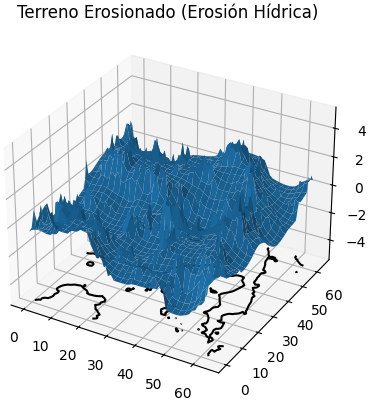
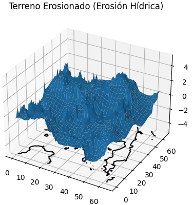

Simulation
"ALL ABOUT MY EXPERIENCE SIMULATING PHYSICAL BEHAVIORS AND NATURAL PHENOMENA"
Fluids
Smoothed-Particle Hydrodynamics (SPH)

Simulación de fluidos creados con el modelo Smoothed Particle Hydrodynamics (SPH) a partir del paper de Muller de 2003 "Particle-Based Fluid Simulation for Interactive Applications", donde se realizan comparaciones entre los resultados obtenidos de la variación de los parámetros viscosidad y stifness. El renderizado final se ha hecho a través de Blender.
Project carried out during my multimedia engineering degree studies, in the third year, in the simulation subject.
This is a simulation made using the Smoothed Particle Hydrodynamics (SPH) model based on Müller's 2003 paper "Particle-Based Fluid Simulation for Interactive Applications", which includes comparisons of results obtained by varying viscosity and stiffness parameters among others like superficial tension.
The final rendering was done using Blender.
C++ Fluid Solver

Simulación basada en las ecuaiones de Navier-Stokes. Esta implementación se lleva a cabo en C++ usando la librería GLUT, en ella, se usan los métodos de integración numérica de Gauss-seidel y Jacobi para llevar a cabo los cálculo de los estados del fluido en cada fotograma, calculando los añadidos de densidad y flujo de fluido, así como la advección mediante interpolación bilineal.
Simulation based on the Navier-Stokes equations. This implementation is done in C++ using the GLUT library. In it, Gauss-Seidel and Jacobi numerical integration methods are employed to perform the calculation of fluid states in each frame. This includes calculating density and fluid flow additions, as well as advection through bilinear interpolation.
Terrains
Generation Algorithms

Este proyecto fue desarrollado en el último curso del grado de ingeniería multimedia. En este proyecto se llevaro a cabo implementaciones en Python de varios algoritmos de generación de terreno procedural como los que se muestra: el algoritmo diamante-cuadrado y el algortimo de punto medio
This project was developed during the final year of the multimedia engineering degree. In this project, implementations in Python were carried out for various procedural terrain generation algorithms, such as the diamond-square algorithm and the midpoint algorithm.
Erosion Algorithms
 

Proyecto derivado del anterior que consiste en la implementacion en python de algoritmos erosivos para mejorar el realismo de los resultados de los terrenos generados con los algortimos generados proceduralmente. En este caso los terrenos erosionados fueron generados con el algoritmo de diamante-cuadrado
Derived project from the previous one, which involves the implementation in Python of erosive algorithms to enhance the realism of terrain generated using procedural generation algorithms. In this case, the eroded terrains were generated using the diamond-square algorithm.
Mass-Spring Model
Hair (1D-Spring)

Esta simulación fue de las primeras simulaciones realizadas durante la asignatura de Simulación del grado de ingeniería multimedia usando Processing. En ella se emplean nodos unidos entre ellos con una constante elástica con un valor que simula el pelo real, además se hizo interactable con el ratón para poder mostrar el efecto.
This simulation was one of the first simulations carried out during the Simulation course in the multimedia engineering degree using Processing. It involves nodes connected to each other with an elastic constant with a value that simulates real hair. Additionally, it was made interactive with the mouse to showcase the effect.
Flags (2D-Springs)
Esta es una simulación de telas realizada durante mis estudios de ingeniería multimedia, durante el tercer en la asignatura de simualción. En ella se simula el comportamiento de banderas con y sin viento usando diferentes tipos de configuración de malla. Para este ejercicio se utilizaron tres tipos de estructuras: structured, bend y shreded. La simulación esta realizada en Processing y en ella se observa las diferencia entre las diferentes estructuras así como el resultado de hace combinaciones de varios tipos de entramados.
This is a fabric simulation created during my multimedia engineering studies, in the third year of the simulation course. It simulates the behavior of flags with and without wind using different mesh configurations. Three types of structures were used for this exercise: structured, bend, and shredded. The simulation is implemented in Processing, showcasing the differences between the various structures as well as the result of combining several types of meshes.
Deformable 2D-Mesh (Breakeble)

Esta simulación en Processing es una continuación de la experimentación con las simulaciones de mallas 2D basadas en el modelo masa muelle. En este caso se experimenta con la posibilidad de crear una malla deformable con ruputra si se excede una elongación límite entre nodos contiguos.
En esta simulación se experimenta con una constante elástica muy baja, por lo que apenas se da lugar a la elongación de la malla. De esta manera, se sobrepasa enseguida el límite de elongación y se produce la fractura de la mesh, dando como resutlado que algunos pequeños trozos de tela queden flotando dando la ilusión de que es un material sólido no deformable
This Processing simulation is a continuation of the experimentation with 2D mesh simulations based on the mass-spring model. In this case, the possibility of creating a deformable mesh with rupture if an elongation limit between contiguous nodes is exceeded is explored.
This simulation explores a very low elastic constant, resulting in minimal elongation of the mesh. In this way, the elongation limit is quickly exceeded, leading to the fracture of the mesh. As a result, some small pieces of the mesh remain floating, creating the illusion of a non-deformable solid material.
Deformable 2D-Mesh (Breakeble)
Simulación similar a la anterior donde esta vez a la malla se le elimina la posibilidad de romperse y se le da una constante elástica mayore experiemnto sirivó para detectar comportamientos particulares de los sitemas de integración numérica como que la tela sea atravesada por la actualización de posición entre disitntos fotogramas. En la sigueinte sección se podrán observar otras simulaciones con un modelo distinto (PBD) que sirve para solucionar este tipo de casuísticas.
Similar to the previous simulation, this time the mesh is prevented from breaking, and a higher elastic constant is applied. The experiment served to identify particular behaviors of numerical integration systems, such as the fabric being penetrated by the position update between different frames. In the next section, other simulations with a different model (PBD) will be presented, addressing such scenarios.
Soft Bodies
Position Based Dynmics (PBD)
En esta simulación de Processing realizada también durante mis estudios de grado de nuevo nos encontramos con una simulación de telas, pero esta vez bajo un modelo distinto. En esta simulación se emplea un modelo basado en un paper de Muller et al. (2007) sobre Position Based Dynamics (PBD). Este enfoque, en lugar de utilizar velocidades, se centra directamente en las posiciones, permitiendo evitar problemas de integración en sistemas basados en fuerzas. Una de las características esenciales que destacan en este modelo es el uso de restricciones para el cálculo de las nuevas posiciones. En el vídeo, se observa que los colores de las uniones entre los nodos de la malla tienen un color entre blanco y rojo, siendo más rojo cuando las distancias entre nodos cumplen menos con las restricciones establecidas.
In this Processing simulation, also conducted during my undergraduate studies, we encounter a cloth simulation, but this time under a different model. This simulation employs an approach based on a paper by Muller et al. (2007) on Position Based Dynamics (PBD). This approach, instead of relying on velocities, focuses directly on positions, avoiding integration problems in force-based systems. One of the essential features highlighted in this model is the use of constraints for calculating new positions. In the video, you can observe that the colors of the connections between the mesh nodes range from white to red, with a deeper red indicating less compliance with the established constraints.
Rigid Bodies
Angular Velocity
En esta simulación se realiza el cálculo de la velocidad angular que corresponde a la rotación realizada por una esfera desplazandose sin que se produzca deslizamiento. En este ejercicio simple se realizó un cálculo de dicha rotación para que el movimiento de la esfera fuese acorde con su rotación, haciendo que parezca que es la rotación quien imprime movimeinto lineal.
In this Processing simulation, also carried out during my undergraduate studies, we encounter a cloth simulation, but this time under a different model. This simulation employs an approach based on a paper by Muller et al. (2007) on Position Based Dynamics (PBD). This approach, instead of relying on velocities, focuses directly on positions, avoiding integration problems in force-based systems. One of the key features highlighted in this model is the use of constraints for calculating new positions.
Particle Systems
Escalable Systems
En esta práctica de la asignatura de Simulación, se abordan dos modelos de simulación de colisión de partículas en un entorno 2D. Primero, se implementa el modelo basado en velocidades, que comprende la detección de colisiones, la restitución a la posición anterior y el cálculo de la velocidad de salida. Luego, se incorpora el modelo basado en fuerzas elásticas (muelles), donde se aplica una fuerza repulsiva si las partículas se acercan demasiado. Además, se introducen estructuras de datos como el método basado en grid y tabla hash para mejorar la eficiencia de la detección de colisiones. Estas estructuras agrupan partículas vecinas, reduciendo el coste computacional de la estrategia de "todas contra todas". La implementación se centra en permitir la interactividad y reinicio de la simulación, y se destaca la visualización de partículas agrupadas en celdas para verificar la precisión de las estructuras de datos.
In this Simulation course practice, two particle collision simulation models in a 2D environment are addressed. Initially, the velocity-based model is implemented, involving collision detection, restitution to the previous position, and calculation of the exit velocity. Subsequently, the model based on elastic forces (springs) is introduced, applying a repulsive force if particles get too close. Additionally, data structures like the grid-based and hash table-based methods are introduced to enhance collision detection efficiency. These structures group neighboring particles, reducing the computational cost of the "all against all" strategy. The implementation focuses on enabling interactivity and simulation reset, with emphasis on visualizing particles grouped in cells to verify the accuracy of the data structures.